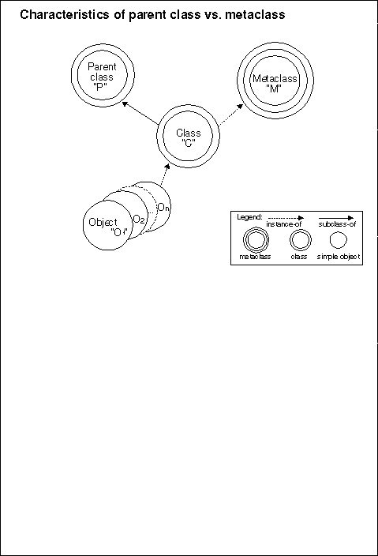
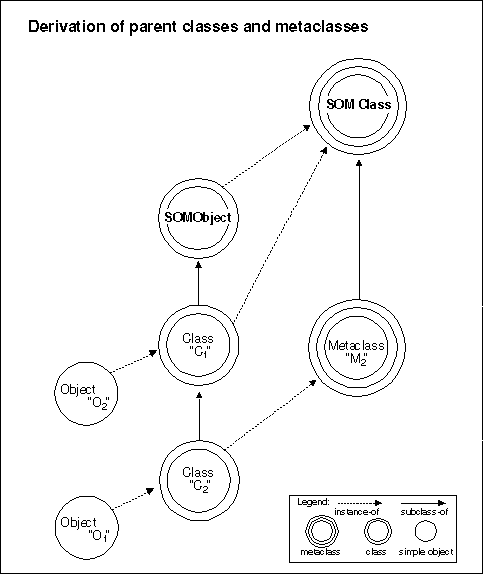

There is a distinct difference between the notions of "parent" (or base) class and "metaclass." Both notions are related to the fact that a class defines the methods and variables of its instances, which are therefore called instance methods and instance variables.
A parent of a given class is a class from which the given class is derived by subclassing. (Thus, the given class is called a child or a subclass of the parent.) A parent class is a class from which instance methods and instance variables are inherited. For example, the parent of class "Dog" might be class "Animal". Hence, the instance methods and variables introduced by "Animal" (such as methods for breathing and eating, or a variable for storing an animal's weight) would also apply to instances of "Dog", because "Dog" inherits these from "Animal", its parent class. As a result, any given dog instance would be able to breath and eat, and would have a weight.
A metaclass is a class whose instances are class objects, and whose instance methods and instance variables (as described above) are therefore the methods and variables of class objects. For this reason, a metaclass is said to define class methods-the methods that a class object performs. For example, the metaclass of "Animal" might be "AnimalMClass", which defines the methods that can be invoked on class "Animal" (such as, to create Animal instances-objects that are not classes, like an individual pig or cat or elephant or dog).
Note: It is important to distinguish the methods of a class object (that is, the methods that can be invoked on the class object, which are defined by its metaclass) from the methods that the class defines for its instances.
To summarize: the parent of a class provides inherited methods that the
class's instances can perform; the metaclass of a class provides
class methods that the class itself can perform. These distinctions
are further summarized below: The distinctions between parent class and
metaclass are summarized in A class has both parent classes and a metaclass.
A class has both parent classes and a metaclass

Any class "C" has both a metaclass and one or more parent class(es).
A metaclass has its own inheritance hierarchy (through its parent classes)
that is independent of its instances' inheritance hierarchies. For example,
suppose a series of classes is defined (or derived), stemming from SOMObject.
The child class (or subclass) at the end of this line ("C[2]") inherits
instance methods from all of its ancestor classes (here, SOMObject
and "C[1]"). An instance created by "C2" can perform any of these instance
methods. In an analogous manner, a line of metaclasses can be defined,
stemming from SOMClass. Just as a new class is derived from an existing
class (such as SOMObject), a new metaclass is derived from an existing
metaclass (such as SOMClass). Parentclassesandmetaclasseseachhavetheirown
independent inheritance hierrarchies
